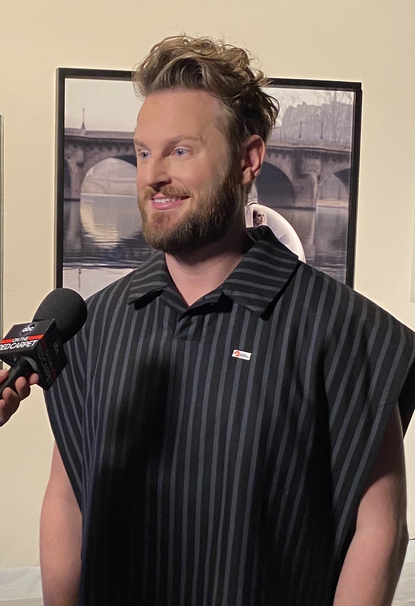
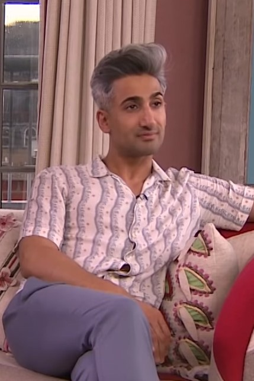
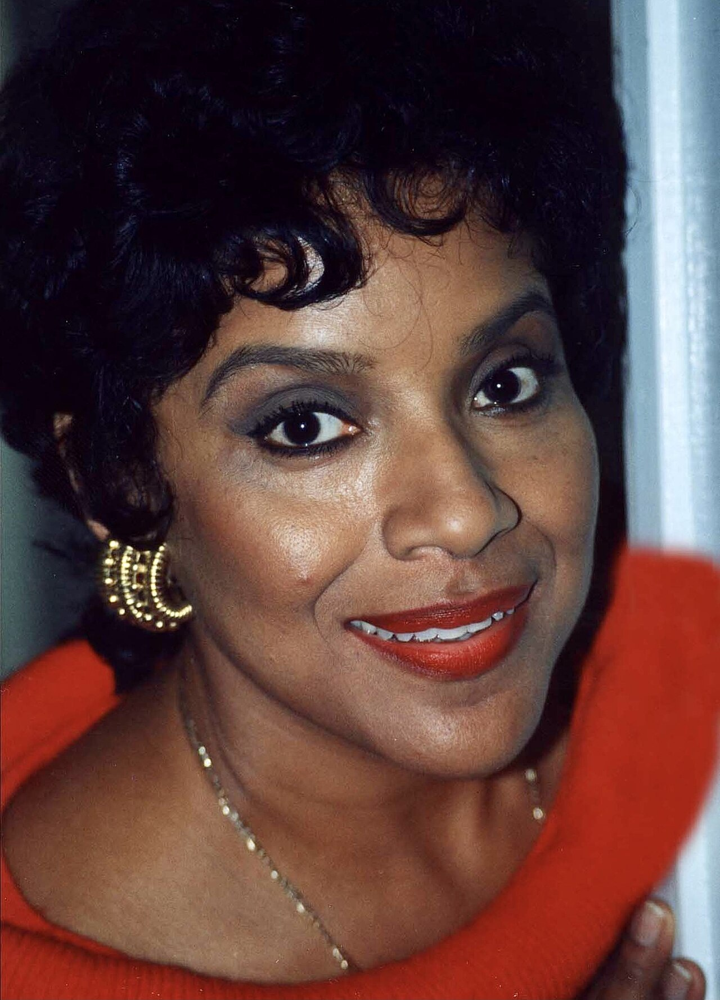
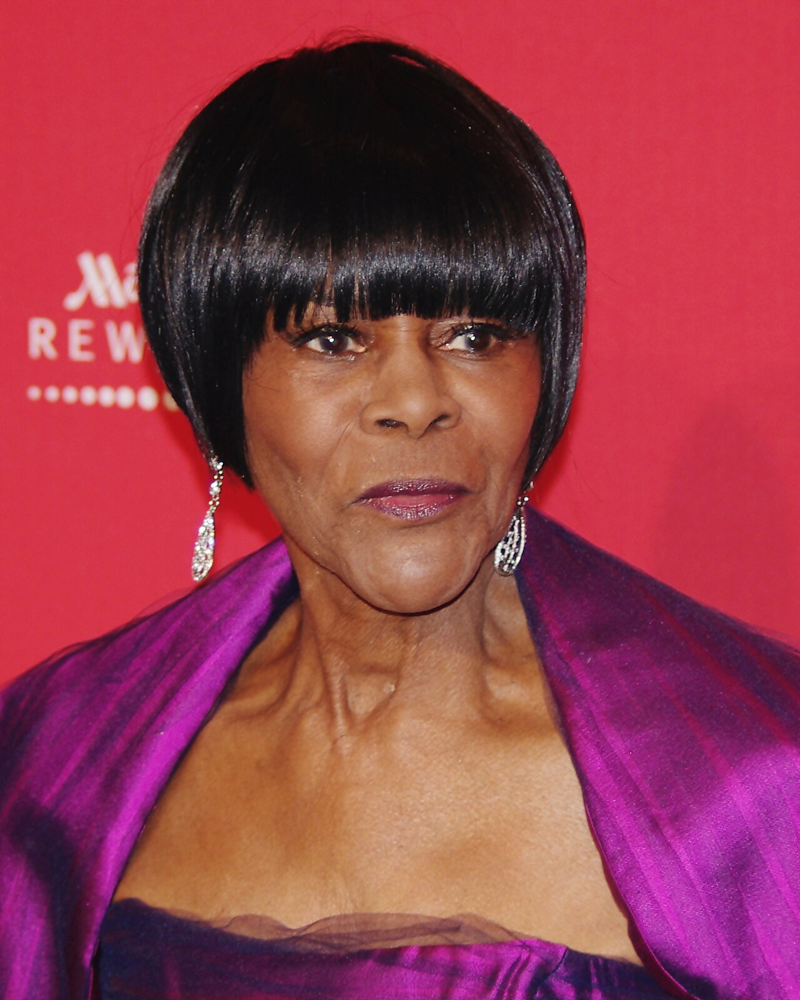
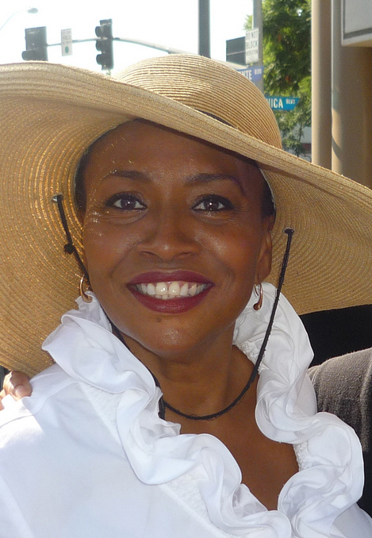
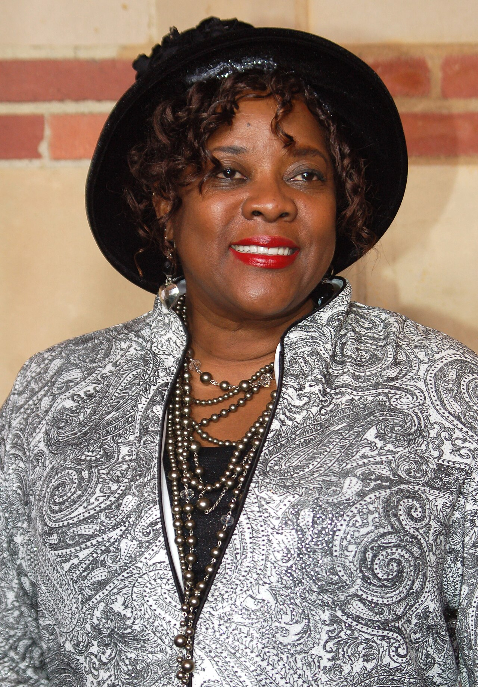
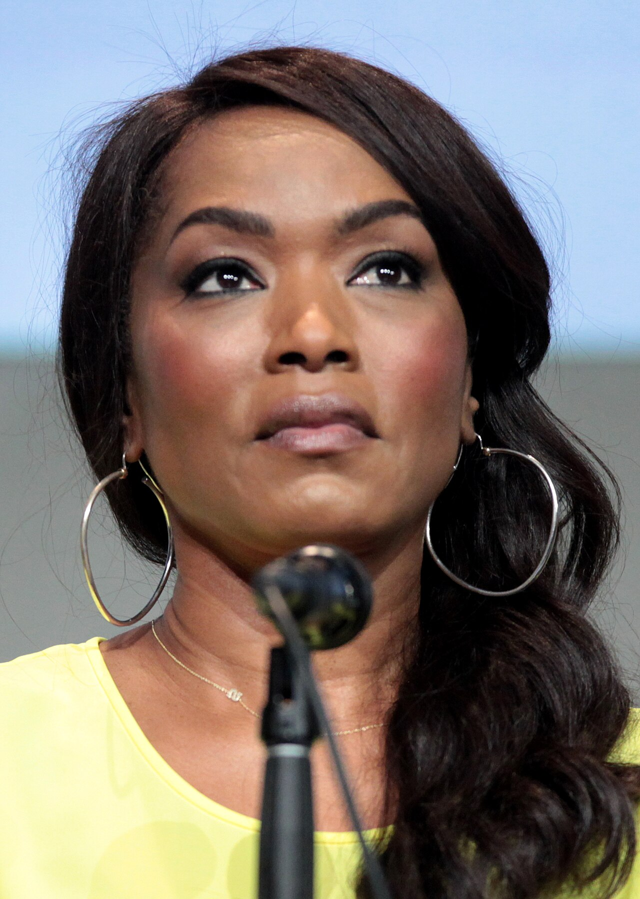
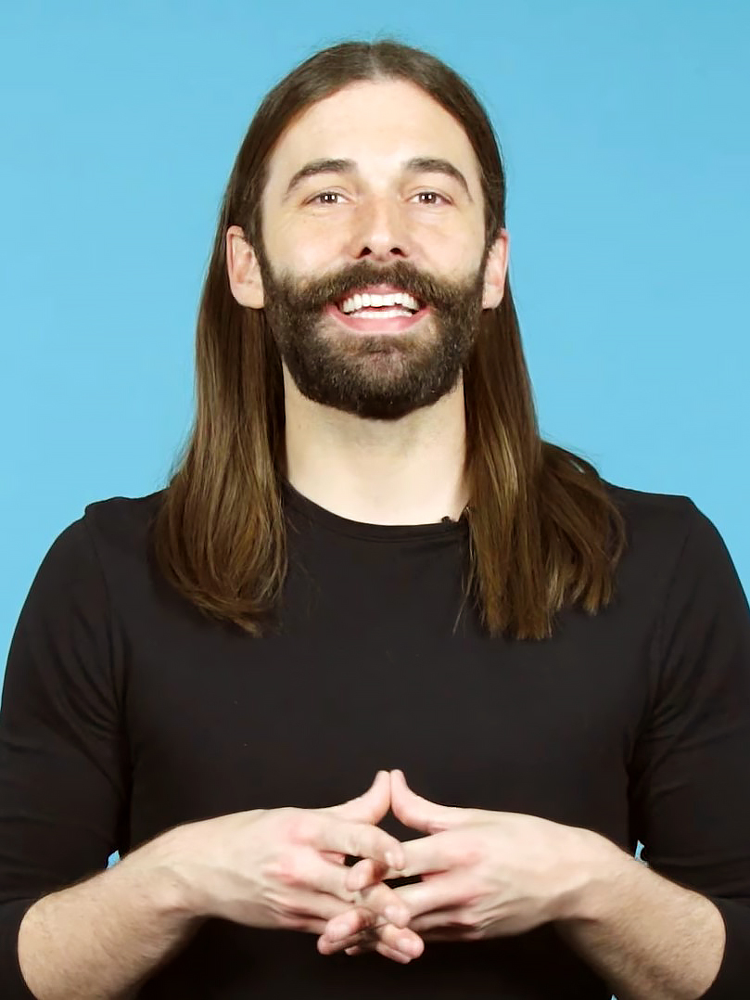
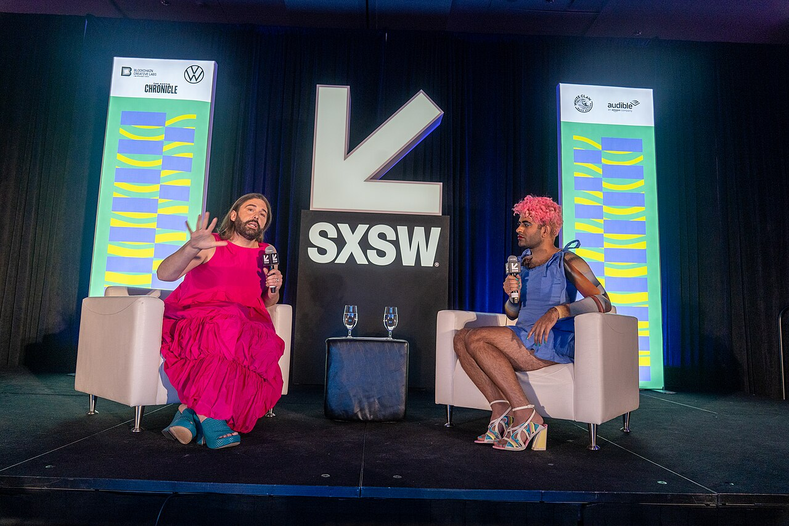
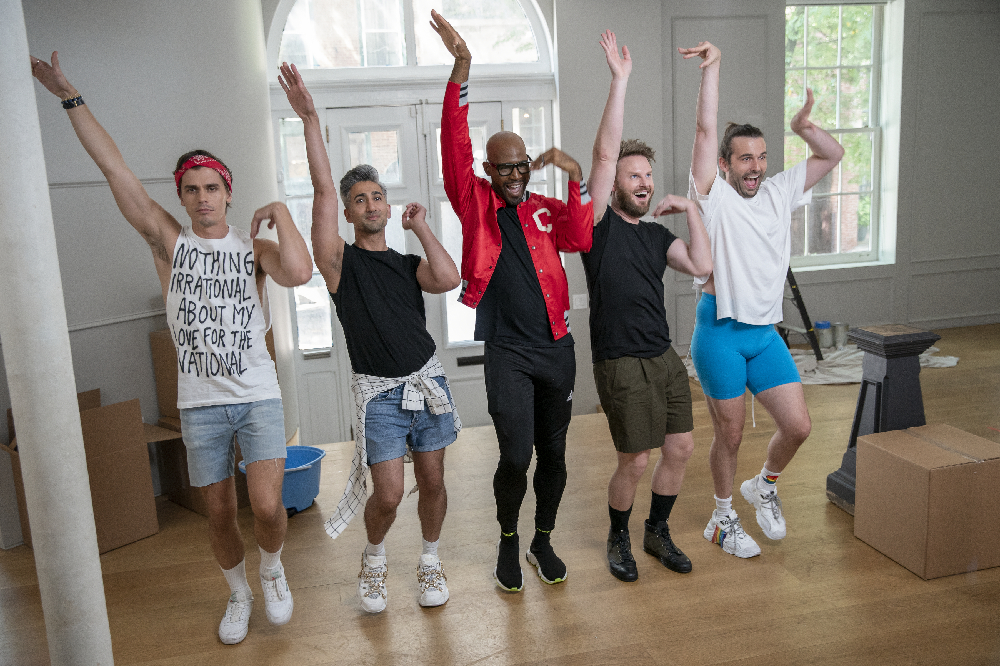

不是把五个人拼成一张脸；是一个人主骨相，最多两个人加细节。

长椭圆脸、强鼻梁、深眼窝、短胡；气质稳、务实、不戏剧化。
取：整张脸的骨相、胡子、稳；不取：他现在的深发/40+ 年龄感——银发和 58 岁纹路是“年龄处理”，不是换一张脸。

合身剪裁、色块、干净鞋、眼镜；说话直接，像“造型教导主任”。
取：版型、色块逻辑、3 条规则；颜色只留 Hot Pink（亮粉）+ 海军蓝 + 白。不取：他的脸/种族身份，也不取他高饱和的芥末/钴蓝。
Charlie 的“不四不像”配方：
脸 80% Bobby + 20% Anderson Cooper（银发、蓝灰眼、体面）；表情 10% Antoni（暖、笑纹），但不取 Antoni 的脸型。
造型 100% Tan 的逻辑，但颜色只留 玫瑰粉 + 海军蓝 + 白（内搭）；性格 = Bobby 的稳 + Antoni 的暖/俏。
规则：脸只能有一个主来源。Bobby 是脸，Anderson 是头发/眼睛，Antoni 是表情，Tan 是衣服。四个人各管一件事，不抢脸。

78 岁，Tony 奖演员，最出名是《The Cosby Show》的 Clair Huxtable；银发、椭圆脸、高颧骨、体面。
取：骨相、颧骨、端庄；不取：太舞台剧的端庄。这张是年轻照，银发看 Cicely。

1924–2021，传奇演员/模特；高颧骨、杏眼、银发/头巾，气场极强。
取：银发轮廓、杏眼、regal；不取：头巾可以借轮廓，不要照搬成 costume。

69 岁，演员/歌手，“Mother of Black Hollywood”；《Black-ish》的 Ruby，glam、毒舌、强配饰。
取：大眼睛、表情、毒舌+好笑；不取：太夸张的“好莱坞奶奶”，要收一点。

77 岁，演员；《Waiting to Exhale》《Grey’s Anatomy》；圆润、亲和、暖。
取：奶奶的“可抱感”、暖；不取：太慈祥，Claudette 要有锋利感。

68 岁，演员；《What’s Love Got to Do with It》《Black Panther》；强骨相、挺拔、ageless glam。
取：体态、挺拔、强骨相；不取：太性感/太年轻化，她是体态参考。
Claudette 的“不四不像”配方：
脸 70% Phylicia + 30% Cicely（骨相/颧骨/杏眼/银发）；表情 20% Jenifer（眼神、毒舌+好笑），但不取她的圆脸；Loretta 只取“暖”，Angela 只取“体态”。
规则：脸只能有一个主来源。Phylicia 是脸，Cicely 是头发/眼睛，Jenifer 是表情，Loretta 是温度，Angela 是站姿。不要五个人的五官一起拼。



长发、胡子、裙装、亮色、露肤、强表演性——这是 camp。Charlie 只取“自信/不道歉”，不取裙装和高能量；否则就不是 58 岁纽约时尚编辑，是另一个 IP。
| 项 | Charlie | Claudette |
|---|---|---|
| 脸（主） | Bobby 100% | Phylicia 70% |
| 脸（次，只加一个特征） | 不加；银发是年龄处理，不是换脸 | Cicely 30%：颧骨/杏眼/银发 |
| 表情/眼神 | Bobby 的暖半笑；Antoni 只借“暖/俏”的性格（不取脸） | Jenifer 20%：眼神、毒舌+好笑（不取圆脸） |
| 造型 | Tan 100% 的逻辑；颜色只 Hot Pink（亮粉）+海军蓝+白 | Auntie Aurora + Mama Graves；深皇家紫+金 |
| 性格 | Bobby 的稳 + Antoni 的暖/俏 | Phylicia 的体面 + Jenifer 的毒舌/好笑 + Loretta 的暖 |
| 不要 | Jonathan 的 camp；Tan 的脸；Anderson/Antoni 的五官 | Madea 式夸张；五个人的五官一起拼 |
一句话：一个人主脸，一个人主造型，一个人主性格；最多三个人。第四个人只能加一个“配件级”的特征（银发、眼镜、笑纹），不能加五官。
图源：Wikimedia Commons（Phylicia Rashad、Cicely Tyson、Jenifer Lewis、Loretta Devine、Angela Bassett、Bobby Berk、Tan France、Jonathan Van Ness）。仅作内部选角/造型参考，不复制真人脸，不用于对外发布。